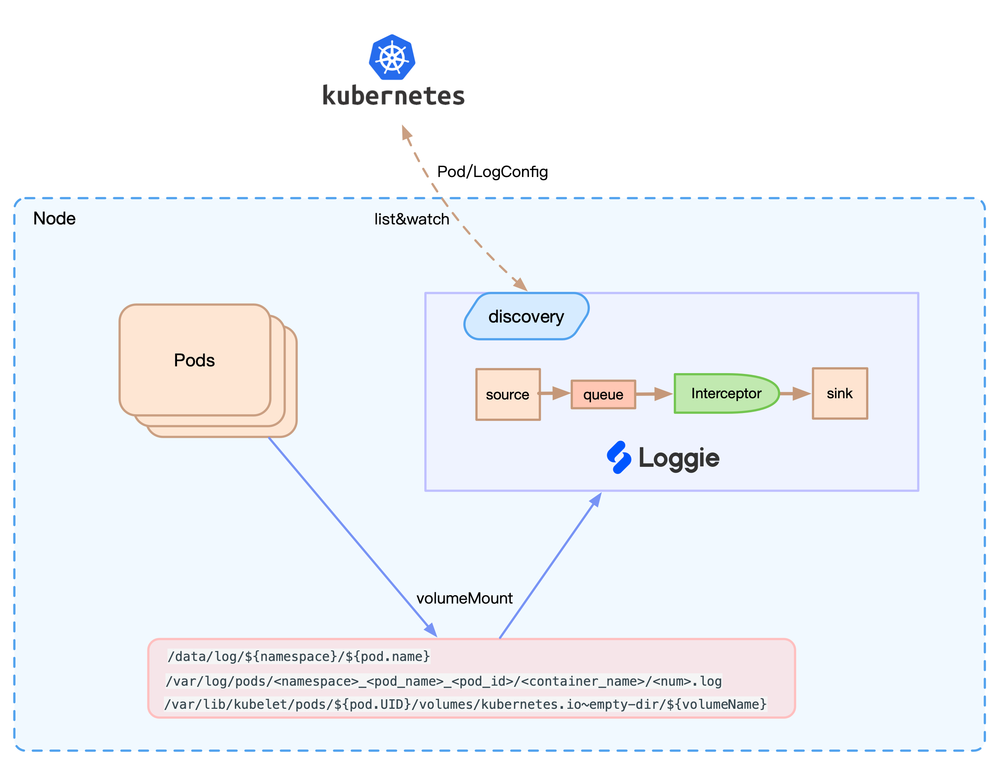
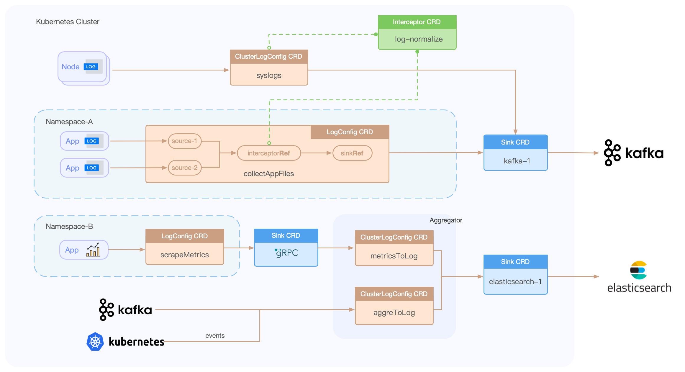

使用Loggie采集容器日志¶
阅读本文之前，建议先参考Kubernetes下日志采集问题。
Loggie如何采集容器日志？¶
由于Kubernetes良好的可扩展性，Kubernetes设计了一种自定义资源CRD的概念，用户可以自己定义CRD表示自己的期望状态，并借助一些framework开发Controller，使用Controller将我们的期望变成现实。
基于这个思路，一个服务需要采集哪些日志，需要什么样的日志配置，是用户的期望，而这就需要我们开发一个日志采集的Controller去实现。
所以，用户只需要在我们定义的CRD LogConfig中，填写需要采集哪些Pods的日志，在Pod中的日志路径是什么。
核心架构如下图所示：

Loggie会感知到Pod和CRD的事件，进行配置的动态更新。同时，Loggie可以根据日志文件路径挂载的Volume，找到相应在节点的文件进行采集。另外还可以根据配置，自动将Pod上的Env/Annotation/Label加入到日志里作为元信息。
同时相比粗暴的所有节点挂载相同路径进行通配采集的方式，也解决了没法针对单个服务精细化配置、采集无关日志的问题。
当然带来的好处不仅仅这些，Loggie在动态配置下发、监控指标等方面都可以基于Kubernetes进行相应的适配和支持。
CRD使用说明¶
Loggie目前有以下几种CRD：
- LogConfig：namespace级别CRD，用于采集Pod容器日志，其中主要填写采集的source配置，以及关联的sink和interceptor。
- ClusterLogConfig：cluster级别CRD，表示集群级别的采集Pod容器日志，采集Node节点上的日志，以及为某个Loggie集群下发通用的pipeline配置。
- Sink：表示一个sink后端，需要在ClusterLogConfig/LogConfig中被关联。
- Interceptor：表示一个interceptors组，需要在ClusterLogConfig/LogConfig中被关联。
使用CRD的流程架构如下所示：

准备工作¶
部署架构¶
整体的部署架构是什么？
- Loggie Agent直接发送给后端比如Elasticsearch还是其他存储等
- Loggie Agent发送至Loggie Aggregator中转处理，再转发至其他后端存储
- Loggie Agent发送至Kafka，Loggie Aggregator消费Kafka再发送至后端
...
本文仅关注采集端，如果需要使用部署Loggie Aggregator，请参考Loggie中转机。
在采集容器日志之前，请确保已经在Kubernetes中部署了Loggie DaemonSet。如何在Kubernetes中部署Loggie？
Info
我们推荐使用DaemonSet的方式采集容器日志，后续Loggie计划支持自动注入Loggie Sidecar的方式采集日志。RoadMap
使用方式¶
业务Pod使用什么方式挂载日志？
建议如果对日志可能性的丢失不敏感，比如运维类的日志，可以使用emptyDir。如果日志比较重要，不允许丢失，请使用hostPath，并在volumeMount配置subPathExpr实现路径隔离。
Example
apiVersion: apps/v1
kind: Deployment
metadata:
labels:
app: tomcat
name: tomcat
namespace: default
spec:
replicas: 1
selector:
matchLabels:
app: tomcat
template:
metadata:
labels:
app: tomcat
spec:
containers:
- name: tomcat
image: tomcat
volumeMounts:
- mountPath: /usr/local/tomcat/logs
name: log
volumes:
- emptyDir: {}
name: log
apiVersion: apps/v1
kind: Deployment
metadata:
labels:
app: nginx
name: nginx
namespace: default
spec:
replicas: 1
selector:
matchLabels:
app: nginx
template:
metadata:
labels:
app: nginx
spec:
containers:
- env:
- name: POD_NAME
valueFrom:
fieldRef:
apiVersion: v1
fieldPath: metadata.name
- name: NAMESPACE
valueFrom:
fieldRef:
apiVersion: v1
fieldPath: metadata.namespace
image: nginx
name: nginx
volumeMounts:
- mountPath: /log
name: datalog
subPathExpr: $(NAMESPACE)/$(POD_NAME)
volumes:
- hostPath:
path: /data/log
type: ""
name: datalog
Caution
请确保Pod挂载的日志路径不会被多个Pod共享。比如一个Deployment下的两个Pod，使用未配置subPathExpr的hostPath挂载日志目录，如果两个Pod调度在相同的节点，会打印到相同的日志目录和文件中，此时可能引起采集异常。
我们首先创建以上示例的tomcat Deployment作为我们被采集日志的对象。
kubectl apply -f tomcat-emptydir.yml
接下来将演示采集上面示例的tomcat日志，并发送至Elasticsearch。
如果你希望采集其他的容器日志，或者发送至其他的后端，只需要修改其中的配置即可。
部署Elasticsearch和Kibana（可选）¶
由于本文演示发送至Elasticsearch，所以这里我们部署一下Elasticsearch和Kibana。
如果你的环境中已经有Elasticsearch和Kibana，这一步可以忽略。
如果希望自己搭建一套Elasticsearch和Kibana试用，这里建议：
如果本地没有helm客户端，需要下载helm。
使用如下命令:
helm repo add elastic https://helm.elastic.co
helm install elasticsearch elastic/elasticsearch --set replicas=1
helm install kibana elastic/kibana
通过：
kubectl port-forward service/kibana-kibana 5601:http
可以直接在浏览器输入localhost:5601，访问Kibana页面。
采集容器日志¶
创建sink¶
为了表明我们即将采集日志发送到的Elasticsearch，需要配置对应的Sink。
这里有两种方式：
-
如果整个集群只会有一个存储后端，我们可以在全局的配置文件configMap里，配置defaults参数，具体可参考。
-
使用Sink CRD，并在logConfig中引用。这种方式可以扩展为多个后端，不同的logConfig可以配置使用不同的后端存储，大多数情况下，我们建议使用该方式。
创建一个Sink如下，Sink为集群级别CRD。可以在spec.sink中修改为其他配置。
Example
cat << EOF | kubectl apply -f -
apiVersion: loggie.io/v1beta1
kind: Sink
metadata:
name: default
spec:
sink: |
type: elasticsearch
index: "loggie"
hosts: ["elasticsearch-master.default.svc:9200"]
EOF
可以通过kubectl get sink default查看是否创建成功。
创建interceptor(可选)¶
和Sink一样，配置interceptor有两种方式：
-
在全局配置文件configMap中，配置defaults参数。此时意味着所有的Loggie Agent都使用该default interceptors配置。
-
使用Interceptor CRD，并在logConfig中被引用。这种方式会更加灵活，适合有一定运维和功能需求的场景。
Loggie目前默认内置了metric（监控指标发送）、 maxbytes（最大event字节数限制）、 retry（重试）三个interceptors。即使我们没有使用以上两种方式配置，仍然会自动使用这3个默认interceptor，所以interceptor其实是可选项。
Caution
- 在全局的defaults中，配置interceptors，会覆盖掉现有的内置interceptors，所以如果使用全局defaults配置interceptors，请把内置的interceptors都加上，除非你确定不需要。
- 使用interceptor CRD配置的logConfig，不会覆盖默认和内置的interceptors，会通过新增的方式加入整个pipeline interceptors chain。
创建一个interceptor示例如下：
Example
cat << EOF | kubectl apply -f -
apiVersion: loggie.io/v1beta1
kind: Interceptor
metadata:
name: default
spec:
interceptors: |
- type: rateLimit
qps: 90000
EOF
这里我们创建了一个rateLimit interceptor，可用于采集发送日志的限流。
可以通过kubectl get interceptor default或者kubectl get icp default查看是否创建成功。
创建logConfig¶
创建完sink和interceptor后，最重要的便是创建logConfig，表明我们希望采集哪些Pod的日志，以及采集Pod的哪些日志。
logConfig里spec.selector部分表示日志配置的下发范围，对采集Pod日志来说，需要配置type: pod，并且使用labelSelector选择指定的Pods，即采集这些Pods的日志。
示例如下：
spec:
selector:
type: pod
labelSelector:
app: tomcat
另外，我们需要在pipeline.sources中配置file source，即采集Pods的哪些日志。
pipeline:
sources: |
- type: file
name: mylog
paths:
- stdout
- /var/log/*.log
- path里填
stdout，表示采集容器的标准输出路径。 - path里填写的日志文件，是容器里的路径。（最终生成配置的时候，Loggie会自动更新成节点上的路径，无需用户关心）
- path请使用glob表达式填写。
- 当
type: pod时，pipeline.name会被loggie自动按照${namespace}-${logConfigName}的格式生成，所以这里无需填写。 - 最终生成的source.name会按照
${podName}-${containerName}-${sourceName}格式生成。
最后，我们使用sinkRef和interceptorRef引用上面创建的sink和interceptor。
最终创建一个logConfig示例如下：
Example
cat << EOF | kubectl apply -f -
apiVersion: loggie.io/v1beta1
kind: LogConfig
metadata:
name: tomcat
namespace: default
spec:
selector:
type: pod
labelSelector:
app: tomcat
pipeline:
sources: |
- type: file
name: common
paths:
- stdout
- /usr/local/tomcat/logs/*.log
sinkRef: default
interceptorRef: default
EOF
我们可以通过kubectl get logconfig tomcat或者kubectl get lgc tomcat来查看是否创建成功。
同时可以通过kubectl describe lgc tomcat查看logConfig的events，用于排查状态。
如果有以下类似的events，说明配置已经下发成功。
Events:
Type Reason Age From Message
---- ------ ---- ---- -------
Normal syncSuccess 55s loggie/kind-control-plane Sync type pod [tomcat-684c698b66-hvztn] success
我们还可以通过kubectl -nloggie logs -f ${loggie-name}来查看指定节点Loggie的日志来判断日志采集情况。
发送成功后，我们可以在Kibana上查询到采集到的日志。